Plataforma web para la gestión de servicios integrales para mascotas: citas veterinarias, vacunación, peluquería y reportes.
Este manual describe cómo usar PetCareApp, la plataforma con la que la veterinaria y los dueños de mascotas gestionan citas, vacunas y servicios de peluquería desde el navegador.
El manual acompaña a cada tipo de usuario en las tareas del día a día: registrarse, inscribir a sus mascotas, agendar citas, consultar el esquema de vacunación y, en el caso del personal de la veterinaria, administrar la información y generar reportes. Cada procedimiento se explica en pasos numerados y, cuando es útil, con una captura de la pantalla correspondiente.
| Rol | Descripción | Funciones principales |
|---|---|---|
| Propietario | Dueño de una o varias mascotas. Crea su propia cuenta desde la pantalla de registro. | Registrar mascotas, solicitar y reprogramar citas, pedir servicios de peluquería, consultar vacunas e historial. |
| Administrador | Personal de la veterinaria. Su cuenta la crea otro administrador. | Gestionar usuarios, mascotas, citas, vacunas y servicios de todos los propietarios, y generar reportes. |
La aplicación no requiere instalación y funciona en computador, tableta y celular.
Para usar PetCareApp se necesita una cuenta. Los propietarios se registran por su cuenta; los administradores reciben la suya de la veterinaria.
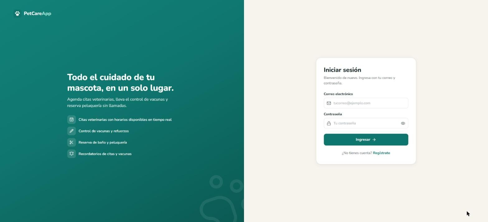
El ícono del ojo, al lado derecho de los campos de contraseña, permite ver lo que se está escribiendo para evitar errores.
Si los datos no coinciden con una cuenta, el sistema muestra el mensaje «Correo o contraseña incorrectos». La sesión permanece abierta durante 8 horas; pasado ese tiempo es necesario ingresar de nuevo.
Haga clic en el ícono {{icon:LogOut}} que aparece junto a su nombre, en la parte inferior del menú lateral. En el celular, abra primero el menú con el botón {{icon:Menu}} de la esquina superior.
Primera carga del día. La aplicación está alojada en un servidor gratuito que se suspende después de 15 minutos sin uso. La primera visita tras ese periodo puede tardar cerca de 50 segundos; las siguientes son inmediatas. La información no se pierde durante la suspensión.
Todas las pantallas comparten el mismo menú, los mismos botones y la misma forma de confirmar acciones, de modo que basta con aprenderlos una vez.
El menú de la izquierda da acceso a cada módulo y resalta en verde el que está abierto. Las opciones Usuarios y Reportes solo aparecen para el administrador, agrupadas bajo el título «Administración». En la parte inferior se muestran el nombre del usuario, su rol y el botón para cerrar sesión.
| Opción | Uso | |
|---|---|---|
| {{icon:LayoutDashboard}} | Inicio | Resumen del día, recordatorios y accesos rápidos. |
| {{icon:PawPrint}} | Mis mascotas / Mascotas | Registro, edición e historial de las mascotas. |
| {{icon:Stethoscope}} | Citas veterinarias | Solicitud, reprogramación y seguimiento de citas. |
| {{icon:Syringe}} | Vacunación | Consulta y registro de vacunas aplicadas. |
| {{icon:Scissors}} | Peluquería | Solicitud y seguimiento de baño, corte y otros servicios. |
| {{icon:Users}} | Usuarios | Administración de cuentas (solo administrador). |
| {{icon:ChartColumn}} | Reportes | Indicadores, gráficas y exportación (solo administrador). |
| {{icon:UserCog}} | Mi perfil | Datos de contacto y cambio de contraseña. |
En las tablas y tarjetas, las acciones sobre cada registro se representan con íconos. Al pasar el puntero sobre uno de ellos aparece su nombre.
| Acción | Descripción | |
|---|---|---|
| {{icon:Pencil}} | Editar o modificar | Abre el formulario con los datos actuales del registro. |
| {{icon:CalendarClock}} | Reprogramar | Cambia la fecha, la hora o el motivo de una cita programada. |
| {{icon:Ban}} | Cancelar | Cancela una cita o un servicio pendiente. |
| {{icon:Trash2}} | Eliminar | Borra el registro de forma definitiva. |
| {{icon:Check}} | Marcar como atendida | Disponible en la agenda del día del administrador. |
Antes de cancelar o eliminar, el sistema solicita confirmación en una ventana emergente. El botón Volver deja todo como estaba; el botón rojo ejecuta la acción. Después de cada operación aparece un aviso en la esquina inferior derecha: oscuro con un visto bueno cuando la operación fue exitosa, y rojo con la causa cuando no pudo realizarse.
Los formularios se cierran sin guardar con el botón Volver, con la X de la esquina o con la tecla Esc.
En pantallas pequeñas el menú se oculta y se abre con el botón {{icon:Menu}}. Las tablas anchas se desplazan horizontalmente con el dedo.
El primer paso es registrar a la mascota. A partir de ese momento se pueden agendar citas, solicitar peluquería y consultar su vacunación.
Al ingresar se muestran tres indicadores (mascotas registradas, citas programadas y recordatorios activos), la lista de recordatorios y las próximas citas. Los recordatorios del día o vencidos aparecen resaltados en un tono rojizo.
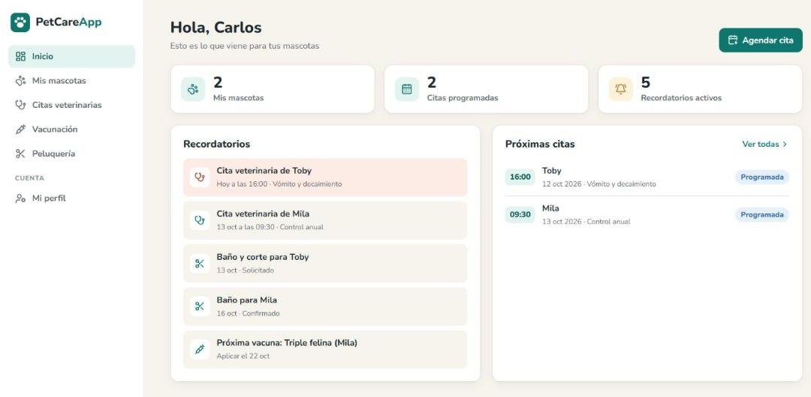
Para registrar una mascota:
En cada tarjeta, el ícono {{icon:Pencil}} permite corregir los datos y el ícono {{icon:Trash2}} elimina la mascota. Al eliminarla también se borran sus citas, vacunas y servicios.
Al hacer clic sobre la tarjeta o en Historial se abre la ficha de la mascota, con el número de citas, vacunas y servicios y una línea de tiempo de todo lo realizado. Desde la ficha también se puede agendar una cita directamente.
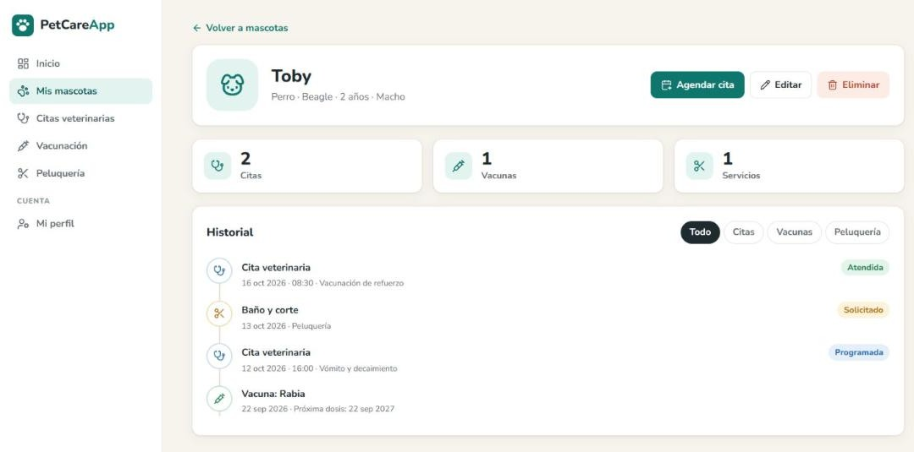
Para solicitar una cita:
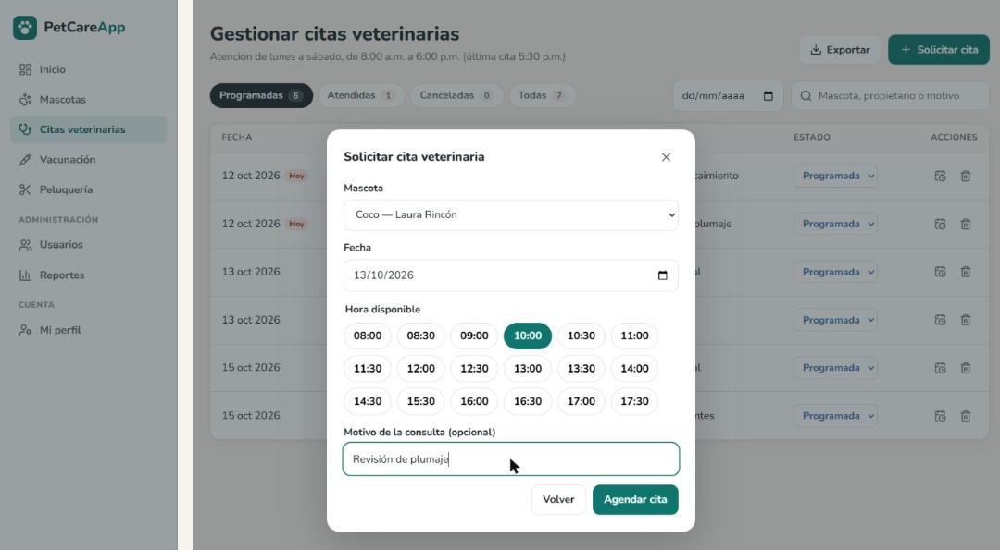
Mientras una cita esté programada puede reprogramarse con el ícono {{icon:CalendarClock}} o cancelarse con el ícono {{icon:Ban}}. Al cancelarla, la franja queda libre para otra persona. Las pestañas superiores separan las citas programadas, atendidas y canceladas, y el buscador permite ubicar una cita por mascota o motivo.
Las vacunas las registra la veterinaria al momento de aplicarlas; el propietario las consulta en este módulo. Para cada vacuna se muestran la fecha de aplicación, la fecha de la próxima dosis y su estado, explicado en la sección 6.3. Las pestañas permiten ver por separado las vencidas, las próximas a vencer, las que están al día y las que no requieren refuerzo.
La peluquería confirma la hora exacta por teléfono. Mientras la solicitud esté en estado o Confirmado se puede modificar {{icon:Pencil}} o cancelar {{icon:Ban}}.
Desde esta opción se actualizan el nombre, el teléfono y el correo. Para cambiar la contraseña, escriba la nueva en Nueva contraseña y repítala en Confirmar contraseña; si deja ambos campos vacíos se conserva la actual. Los cambios se guardan con Guardar cambios.
El administrador tiene acceso a la información de todos los propietarios y puede crear, modificar y eliminar cualquier registro. Además de lo descrito en el capítulo anterior, cuenta con las funciones siguientes.
El panel reúne lo que requiere atención durante la jornada:
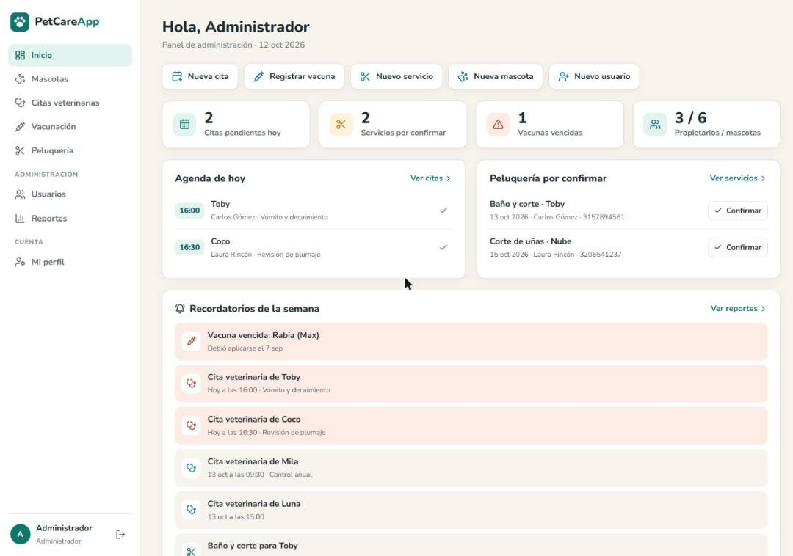
Con el ícono {{icon:Pencil}} se modifican los datos, el rol o la contraseña de una cuenta; si el campo de contraseña se deja vacío, se conserva la actual. El ícono {{icon:Trash2}} elimina la cuenta junto con sus mascotas y su historial. Un administrador no puede quitarse su propio rol ni eliminar su cuenta, y los cambios de rol tienen efecto inmediato aunque el usuario tenga la sesión abierta.
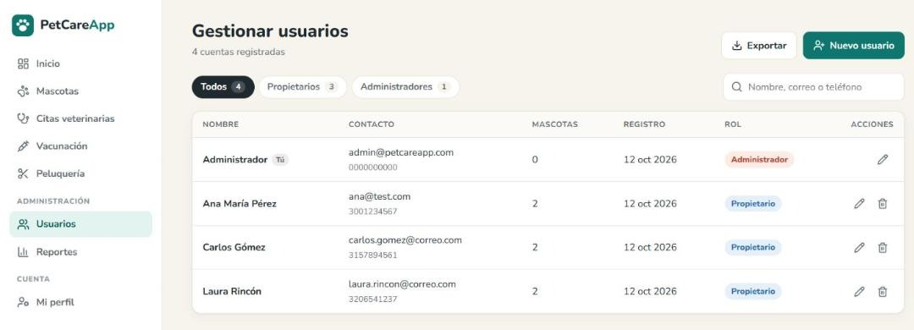
El formulario del administrador incluye el campo Propietario: al registrar una mascota se elige su dueño y, al editarla, puede asignarse a otro. El buscador encuentra mascotas por nombre, raza o propietario, y la ficha muestra además el teléfono y el correo del dueño.
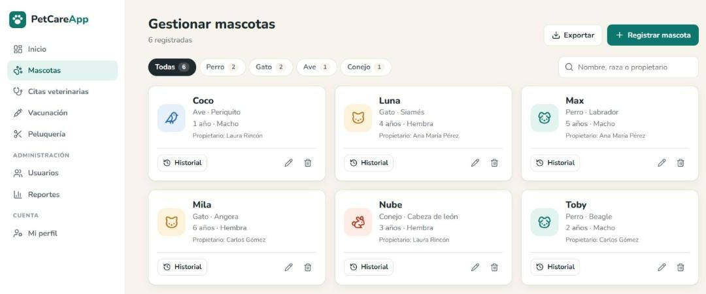
El administrador puede agendar citas para cualquier mascota; en el selector cada opción aparece como «mascota — propietario». El estado de una cita se cambia desde la lista desplegable de la columna Estado. También puede reprogramar {{icon:CalendarClock}} cualquier cita programada, incluso cambiando la mascota, y eliminarla {{icon:Trash2}} de forma definitiva.
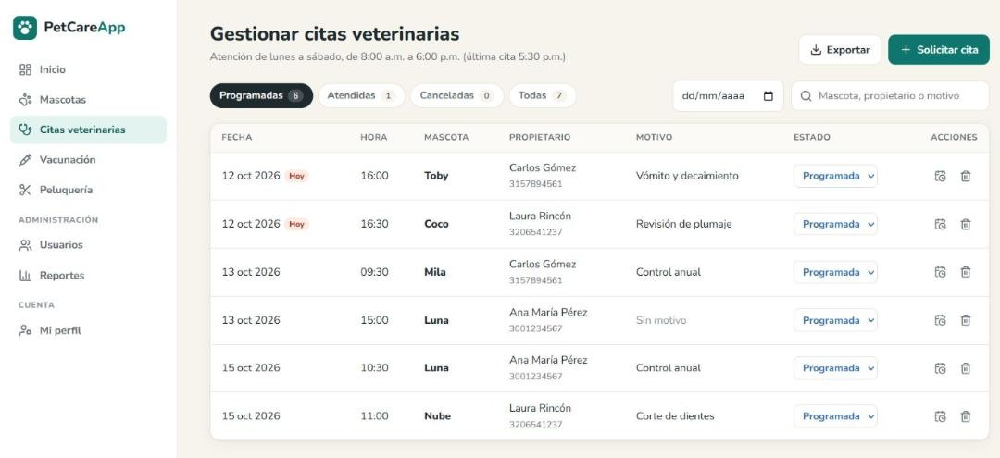
Si se intenta devolver a «Programada» una cita cuya franja ya fue tomada por otra persona, el sistema lo impide y muestra el aviso «Ese horario ya está ocupado».
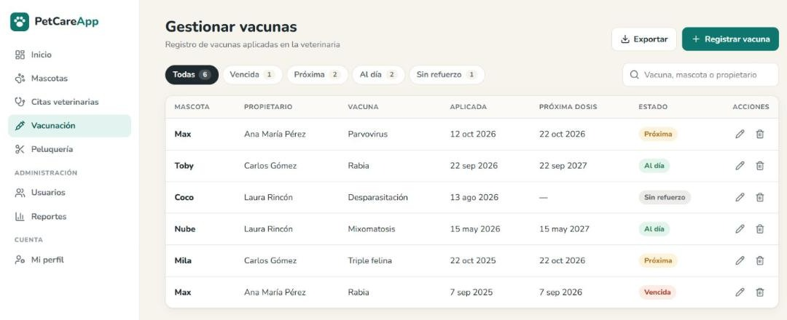
El administrador crea servicios para cualquier mascota, cambia su estado desde la lista desplegable, los modifica mientras están pendientes y los elimina con el ícono {{icon:Trash2}}.
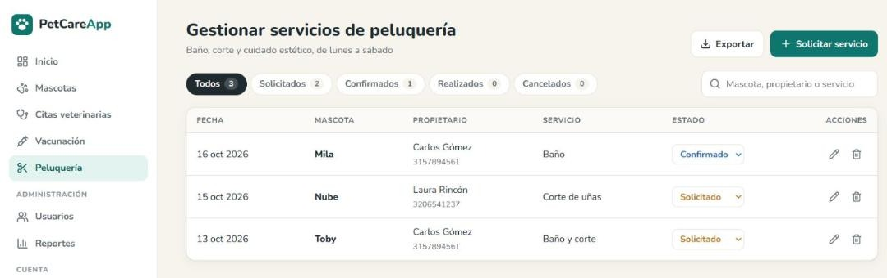
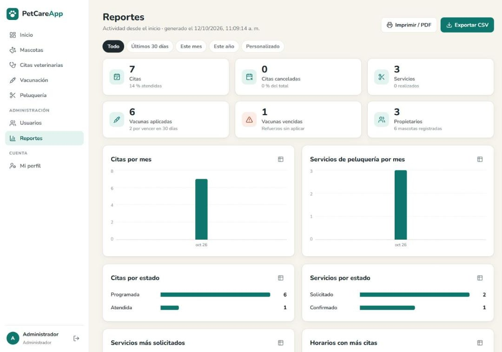
Al pasar el puntero sobre una barra se muestra su valor y porcentaje. El ícono {{icon:Table2}} de cada gráfica presenta los mismos datos en forma de tabla. El botón Exportar CSV descarga el reporte completo y Imprimir / PDF abre la impresión del navegador, donde puede elegirse «Guardar como PDF». La distribución de mascotas por especie corresponde siempre al total registrado; los demás datos dependen del periodo elegido.
Estas reglas las aplica el sistema de forma automática; conocerlas ayuda a entender por qué algunas opciones no están disponibles en ciertos casos.
Una cita se crea como Programada y termina como Atendida o Cancelada. Un servicio se crea como , pasa a Confirmado y termina como Realizado o Cancelado. El administrador puede asignar cualquier estado desde la lista desplegable y devolver una cita a «Programada» si su franja sigue libre.
| Estado | Significado |
|---|---|
| Vencida | La fecha de la próxima dosis ya pasó. |
| La próxima dosis vence dentro de los siguientes 30 días. | |
| Al día | La próxima dosis vence en más de 30 días. |
| Sin refuerzo | La vacuna no tiene una próxima dosis registrada. |
Los recordatorios se calculan cada vez que se abre la página de inicio. Incluyen las citas programadas y los servicios pendientes de los próximos 7 días, y las vacunas que vencen en los próximos 30 días o que vencieron hace menos de 60. Si una vacuna se vuelve a aplicar, se toma en cuenta solo el registro más reciente. El propietario ve los recordatorios de sus mascotas y el administrador los de todas.
La mayoría de los mensajes del sistema indican qué dato corregir. La siguiente tabla reúne los casos más frecuentes.
| Mensaje o situación | Causa | Solución |
|---|---|---|
| Correo o contraseña incorrectos | Los datos no coinciden con ninguna cuenta. | Verifique mayúsculas y espacios. Si olvidó la contraseña, solicite al administrador que la restablezca. |
| Ya existe una cuenta con ese correo | El correo ya está registrado. | Inicie sesión con ese correo o use uno diferente. |
| La contraseña debe tener mínimo 8 caracteres | La contraseña es demasiado corta. | Escriba una contraseña de 8 caracteres o más. |
| Las contraseñas no coinciden | Los dos campos de contraseña son diferentes. | Escriba la misma contraseña en ambos campos. |
| Ese horario ya está ocupado, elija otro | Otra persona reservó la franja primero. | Seleccione otra de las horas disponibles. |
| Esa hora ya pasó, elija una más tarde | Se eligió una hora del día que ya transcurrió. | Escoja una hora posterior u otro día. |
| No hay atención los domingos | La fecha elegida es domingo. | Seleccione un día de lunes a sábado. |
| Solo se pueden modificar citas programadas | La cita ya fue atendida o cancelada. | Solicite una nueva cita. |
| Sesión expirada o inválida | Pasaron más de 8 horas o la cuenta cambió. | Inicie sesión nuevamente. |
| Primero debes registrar una mascota | La cuenta aún no tiene mascotas. | Registre una mascota en el módulo correspondiente. |
| La página tarda en cargar | El servidor estaba suspendido por inactividad. | Espere cerca de 50 segundos; luego funciona con normalidad. |
Si un problema persiste, cierre la sesión, vuelva a ingresar y, si continúa, comuníquese con el administrador de la veterinaria.